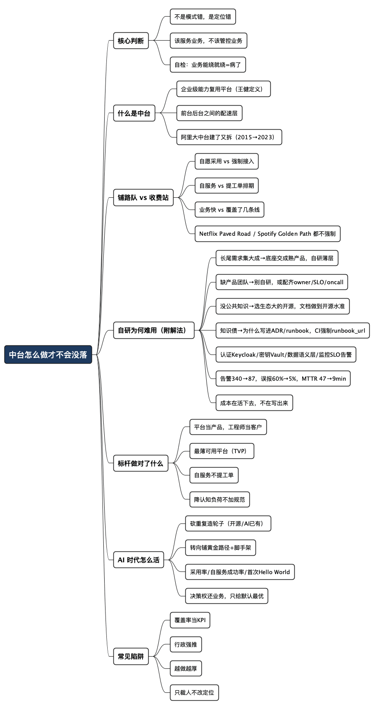

中台怎么做才不会没落
Posted on 四 20 8月 2026 in Journal
| Abstract | 中台怎么做才不会没落 |
|---|---|
| Authors | Walter Fan |
| Category | Journal |
| Version | v1.0 |
| Updated | 2026-08-20 |
| License | CC-BY-NC-ND 4.0 |
中台怎么做才不会没落
我见过好几个中台团队，气氛都差不多：忙，但心虚。天天赶需求、修组件、追排期，可一到季度汇报就犯难——业务的功劳看得见，用户涨了多少、订单多了多少；中台呢，只能说“我们支撑了 N 个业务线”。更扎心的是，团队自己写的框架，工程师私下宁可用开源的。
于是很多人得出结论：中台这套东西过时了。 我不这么看。中台没落不是模式错了，而是定位错了——它本是给业务“铺路”的工程队，却被供成了 KPI、权力中心和收费站。路修得越来越厚，车越开越慢，最后大家绕着走。
一句话立场：中台不是错，是位置摆错了。它该服务业务，不该管控业务。 一个判断标准：如果业务团队“能绕就绕”，你的中台就已经病了，汇报写得再漂亮也没用。
下面说三件事：中台怎么从“铺路队”变成了“收费站”，标杆公司做对了什么，以及 AI 时代该砍什么、守什么。
先把“中台”这个词说清楚
中台这词儿被用滥了，有人叫它中间件，有人叫它 PaaS，有人干脆当成“公共技术部”。我采用当年 ThoughtWorks 的王健给出的定义，我觉得最准：
中台是“企业级能力复用平台”。 它夹在变化快的前台（业务）和变化慢的后台（基础设施、数据库、核心系统）中间，负责解决两者“配速”的矛盾。
打个不写代码也懂的比方：前台像开在城里的连锁店，得随客流调整；后台像总部的中央厨房和仓库，讲究稳定。中台就是那套标准化的配送补货系统，让每家店不必自己谈供应商、搭冷链，专心做生意。这套东西本身没毛病，毛病出在配送系统开始规定“你必须卖什么菜、几点开门、用谁家的锅”——它就从帮手变成了婆婆。
阿里 2015 年提“大中台、小前台”，一度是行业标配。可到 2020 年底，张勇在内网直言中台太臃肿、太僵化，阻碍业务发展；高峰期上万人的中台团队随后一路“做薄、做轻”，到 2023 年“1+6+N”拆分，中后台能力下沉到各业务集团，“大中台”概念基本被消解（据财新、界面、第一财经等公开报道）。注意阿里不是“不要中台”，而是把厚中台拆薄、贴近业务。张勇的原话是题眼：中台应该是“服务”的角色，而不是以强管控的方式做生态。
中台是怎么从“铺路队”变成“收费站”的
同样一支平台团队，做好了叫“铺路队”，做砸了叫“收费站”。差别不在技术，在定位和权力关系。我把它拆成四条对照：
| 维度 | 铺路队（把路修好，你随便走） | 收费站（想过路，先交钱排队） |
|---|---|---|
| 采用方式 | 好用到你自愿走，不用逼 | 行政命令强制接入，不用就通报 |
| 交付方式 | 自服务，几分钟起一个新服务 | 提工单、等排期、跨团队扯皮 |
| 价值来源 | 业务跑得更快，我沾光 | 我“覆盖”了多少业务线 |
| 团队心态 | 我的客户是工程师，得让他们爽 | 业务是来求我的，得听我的规范 |
左边那列，就是 Netflix 的 “Paved Road（铺好的路）” 和 Spotify 的 “Golden Path（黄金路径）” 在做的事。它们有个共同的、常被国内团队忽略的关键设定：
这条路是“推荐且被支持”的，但不是强制的。团队随时可以选择不走。
Netflix 讲得很直白：中心化团队的作用是 赋能（enable），不是管控——想要更多自由，就得承担更多责任。Spotify 的 Golden Path 也强调“可选，但最省事”，所以大家自愿选它，标准化是自然发生的，不是文件规定出来的。收费站的逻辑是“我有权，你必须用”，业务一有压力它第一个被砍；铺路队的逻辑是“我把路修到你宁可走这条”，砍了业务自己疼。
一个简单的自检：问业务团队，如果允许绕过中台自己干，他们绕不绕？ 答案是“早想绕了”，那你修的就不是路，是路障。
为什么自研的基础服务，总是难用难懂难改
“业务想绕”不是无理取闹。中台里最招人骂的，恰恰是那几样最“基础”的东西：认证授权、密钥管理、数据分析平台、监控告警。这些自研系统往往能跑，但难学、难问、难接手，最后还不如买的、开源的省心。这不是团队水平不行，是它们有四条注定翻车的病根——关键是，每条病根都有对症的解法。
四条病根，和对症的解法
病根一：长尾需求集大成，你以为写完了，其实刚开始。 认证要 OIDC、SAML、SCIM、MFA；密钥要轮转、HSM、灾备、泄露响应；监控要收敛、静默、值班。每个词都是一条长路，而且标准本身年年在变——2026 年初 OAuth 2.1 落地，隐式授权被移除、PKCE 变成所有客户端强制、重定向 URI 不许再用通配符匹配。你自研的认证服务，光是追这些协议变更就够一个小组常年加班，还是拿生产环境当练功房。
解法：底座交给踩过全套坑的成熟产品，你只做贴业务的薄层。 认证别自己实现协议，用 Keycloak（Apache 2.0，SAML/LDAP 联邦最全）或云 IdP，你只做员工生命周期、内部权限申请、接入向导。密钥别自己写加密存储，用 Vault 或云 KMS——轮转在 Vault 里就是一条
vault write keymgmt/key/xxx/rotate，动态密钥、多区域复制、HSM 保护都是现成的，你只做审批流、租户模型和审计报表。
病根二：平时没人夸、出事人人骂，天然缺产品团队。 这类系统像办公室的水电煤——灯亮着没人谢电工，灯一灭电话被打爆。因为它不直接产出业务价值，公司舍不得给它配产品经理、写文档的人、做支持的人，结果“像产品没产品经理，像平台没 SLO 和 on-call”，做成四不像。
解法：要么别自研，要么把它当产品立项，配齐 owner、文档、SLO、on-call。 没有这套配置就自研，等于开餐馆不请厨师——迟早垮。做不到，就老老实实用开源加运维，把省下的人力投到真正差异化的地方。
病根三：没有公共知识兜底。 开源再复杂也有文档、issue、Stack Overflow、踩坑帖，你不会用 Keycloak、Vault、Prometheus，搜一下总能找到同病相怜的人。内部平台不一样：文档像考古线索，报错像谜语，最佳实践散在群聊、旧 wiki 和某位老同事脑子里。学开源像爬有路标的山，学内部平台像没电的夜爬。
解法：优先选生态大的开源，让全世界的踩坑帖替你当文档。 监控这种领域尤其如此——Prometheus + Grafana + Loki/Tempo + OpenTelemetry 是事实标准，海量最佳实践现成可抄，自研一套监控等于放弃整个社区的知识库。真要自研，就逼自己把内部平台的文档做到开源项目的水准：quick start、错误码、runbook，一样不少。
病根四：知识债最重，系统退化成“人肉 API”。 为什么这里多一次审批、那个字段不能改、staging 和 prod 流程不一样？答案只在几个人脑子里时，系统表面是平台，实际是“人肉 API”——调用方式是找对人、等回复。人会转岗、休假、离职，代码留下来了，原因没留下来。
解法：把“为什么”写进 ADR 和 runbook，而不是留在脑子里。 代码回答“做了什么”，ADR 回答“当年为什么这么做”。一个硬招：要求每条告警规则都带
runbook_url标签，CI 拒绝没有 runbook 的告警上线——十分钟就能配好，能挡住一堆垃圾。
四类服务：推荐方案 + 一个真实教训
| 基础服务 | 自研最容易翻车 | 推荐做法 | 一个真实教训 |
|---|---|---|---|
| 认证授权 | 协议年年变（OAuth 2.1）+ 权限模型演进 | Keycloak / 云 IdP 做底座，自研只做员工生命周期、权限申请、接入向导 | 自己拼一套“像 IdP 的东西”，等 OAuth 2.1 一落地，全部 flow 得重写 |
| 密钥管理 | 轮转、灾备、泄露响应、HSM、审计合规 | Vault / 云 KMS 做底座，自研审批流、租户模型、SDK 包装 | 命根子领域，便宜的错很贵——自研密钥库的加密和轮转，出一次泄露就够喝一壶 |
| 数据分析 | 口径不一致：各部门算的“营收”不是一个数 | 语义层（dbt Semantic Layer / Cube）定义 canonical 指标，BI 只暴露审核过的度量 | 十个报表十个“活跃用户”定义，开会先吵半小时口径，数据平台反而制造混乱 |
| 监控告警 | 告警风暴、误报疲劳、无 runbook | Prometheus/Grafana 生态 + SLO-based 告警，每条告警配 runbook | 某团队按事故一条条堆告警，攒到 340 条、误报率 60%，值班像俄罗斯轮盘赌 |
那个监控的教训值得多说一句。有团队把告警从 340 条砍到 87 条，改成基于 SLO 的告警（用户真受影响才 page，而不是某个指标一抖就响），再给每条告警配上 runbook、按严重度分级路由——结果每周被吵醒次数从 80 多次降到 11 次，误报率从 60% 降到 5% 以下，真实事故的平均修复时间从 47 分钟缩到 9 分钟。这套东西全是 Prometheus 生态的公开最佳实践，自研一套监控，等于把这些血泪经验重新踩一遍。
说到底，这些东西的成本不在“写出来”，而在“活下去”：三五年后还有人修 bug、补文档、扛事故吗？能写出来是最低门槛，能让原作者不在场时别人还用得对，才是真本事。 至于到底该买、用开源还是自研，我在《IT 中间件三岔路》里写过完整决策清单，不重复。放到中台的语境里，结论一句话：基础通用能力，底座能买就买、能用开源就别自研；自研只留给“只有你懂业务才做得出来”的那薄薄一层。
标杆公司到底做对了什么
别只盯着阿里“拆”，也看看那些一直没塌的平台。它们的共性有四条，可以直接抄：
- 把平台当产品做，把工程师当客户（Team Topologies 的 Platform as a Product）：你的用户不是老板，是每天用你工具的开发者，得像产品经理一样看留存、算满意度。Netflix 的内部 PaaS 就是把 AWS、Kubernetes 的复杂细节全藏起来，让几百个小团队不必人人都成为分布式系统专家。
- 只做“最薄可用平台”（Thinnest Viable Platform）：平台做到“刚好够用”就停手，极端情况下一个 Wiki 页面写清“我们只用这家云、这几个服务”就是你的平台。中台臃肿，往往是团队用“功能多”证明自己存在，结果越厚越慢、越慢越没人用。
- 自服务，不提工单：Spotify 的黄金路径让开发者三十分钟起一个新微服务，CI/CD、监控、安全基线全预置好。朴素的合格线是——发个服务用不用求人、用不用等排期？ 每件事都提工单等回复，那不叫平台，叫瓶颈。
- 降认知负荷，而不是加规范：平台该把开发者“不得不操心的破事”接过来。可很多中台反过来，接入先读三十页规范、填五张表，认知负荷不降反升——这种“为统一而统一”是收费站的典型症状。
顺带一句，这些公司也交过学费：Spotify 在有 Backstage 之前，工程师靠 Excel 表格导航自己那堆微服务。平台是被真实的痛逼出来的，不是先画大饼再填功能。 一上来就规划“三年建成企业级全域中台”的，大概率走阿里的老路——建了又拆。
AI 时代，中台该砍什么、守什么
AI 来了，中台还有活路吗？有，但活法变了。精兵简政是必须的，可光裁人只是把病拖着。四条能落地的做法：
-
砍重复造轮子：通用轮子开源和 AI 已经做得又好又免费，自研的不如人家好用就别硬撑。把自研收缩到“只有你懂业务才做得出来”的部分——特有业务规则、内部集成、合规安全基线，其余能用开源用开源、能用 AI 生成就生成。
-
从“写框架”转向“铺黄金路径 + 配脚手架”：AI 时代开发者最缺的不是代码，是“这么多选择里，哪条路是对的”。把公司认可的技术栈、安全配置、部署流程，固化成一键生成的模板，配上 AI 助手，让新人开箱即用。路你来铺，车让业务自己开。
-
用采用率当裁判，别数“覆盖了几个业务线”：别数你管了多少，要数业务因你快了多少。借 DORA（部署频率、变更前置时间、变更失败率），再加两个平台专属指标——自服务成功率（多少需求业务不提工单就自己搞定）和首次 Hello World 时间（新人从零到写第一行业务代码要多久）。这两个数字骗不了人：上升说明你在铺路，不动却在扩编说明你在建收费站。
-
把决策权还给业务，只提供“默认最优”：学 Netflix，路修到业务自愿走，而不是发文强制。允许有正当理由时绕过——绕的人多了，正好暴露你路修得不行。强制接入是双刃剑：它能刷高覆盖率，也精准掩盖了“没人真心想用”这个致命问题。
上面四条是守成。真正的进攻方向只有一个：全面拥抱 AI，把中台变成 AI 的手和脚。 这也是中台在 AI 时代最实的一条活路，值得单独展开。
全面拥抱 AI：把中台变成 AI 的手和脚
过去中台的服务、知识、运维，是给人用的——人点页面、人查 wiki、人敲命令。AI 时代要换个用户：让 AI Agent、AI Bot、AI CLI 成为中台的头号消费者。 中台管着公司最全的能力和上下文，天生就该是 AI 干活的地盘。脏活、累活、杂活全交给 AI，人只保留关键判断。中台在这里大有可为。
把能力全部暴露给 AI
第一步是把中台的 API、知识、运维操作，全部做成 AI 能直接调的接口。今天有了现成的标准——MCP（Model Context Protocol，模型上下文协议）：Anthropic 2024 年底开源，随后被 OpenAI、Google 采纳，2025 年底捐给 Linux 基金会，如今公开的 MCP server 已超过一万个，被称作“LLM 栈的 USB-C 接口”。你把中台能力包成 MCP server，任何支持 MCP 的 Agent、IDE、Bot 都能即插即用，不必为每个模型各写一遍胶水。
具体三条腿一起上：
- MCP server：把查服务状态、拉配置、创建资源、查审计这类能力，暴露成 MCP 的 Tools（可调函数）和 Resources（只读上下文）。
- CLI：一套设计干净、输出结构化（JSON）的命令行，人能用，AI Agent 也能可靠地拼命令、读结果。CLI 反而是 AI 时代最被低估的接口。
- API + 知识库：把 runbook、FAQ、设计背景喂进检索层，让 AI 回答“为什么这么配”，把前面说的“人肉 API”知识债，反过来变成 AI 的知识资产。
人机分工：脏活给 AI，关键决策留人
能力暴露给 AI，不等于把方向盘也交出去。分工的红线是“可不可逆”：可逆、高频、低风险的动作放手让 AI 干，不可逆、高影响的动作必须人来拍板。
| 交给 AI（脏活累活杂活） | 留给人（关键判断） |
|---|---|
| 查日志、拉指标、看状态 | 生产环境删除 / 改数据 |
| dev/staging 起环境、跑脚手架 | 权限、密钥、安全组变更 |
| 生成配置、补文档、写 runbook | 跨账号 / 跨区域高影响操作 |
| 例行巡检、批量改标签 | 对外发通知、动钱的操作 |
这张表不是我拍脑袋，是业内 human-in-the-loop（人在环中）的共识：审批只该放在“钱在动、对外沟通、永久改记录”这类不可逆的地方。关键是别什么都要人批——事事审批，卡点很快就退化成橡皮图章，值班的人闭着眼点“同意”，护栏形同虚设。
护栏：AI 敢放手，全靠它兜底
把中台 API 全暴露给 AI，最大的风险是 AI 犯错——它可能被提示词注入带偏，可能一本正经地干错事。所以能不能放手，全看护栏做得牢不牢。这对 Agent 的质量和稳定性提出了远高于“能跑 demo”的要求。业内相对成型的五道护栏，可以照抄：
- 最小权限：一个 Agent 对应一个任务，只给它这个任务需要的权限。默认拒绝所有
Delete*、改生产、跨租户操作，用短时令牌而不是长期密钥。 - 干跑预览：高风险操作先出 diff 和影响面，让人看清“它准备干什么”再决定放不放行。
- 人工卡点：不可逆操作异步暂停，把完整动作载荷推到 Slack/PagerDuty 等审批，人批了才继续。
- 完整审计：每一步都记下来——谁发起的、哪个 Agent、调了什么、结果如何。出事能复盘，合规能拿证据。
- 急停 + 回滚：一个非技术的人半夜也能一键停掉 Agent、退回人工流程。而且这套要演练过，不是写在文档里的摆设。
再加一条组织护栏：每个 Agent 要有明确的 owner。不是“AI 团队”这种集体名词，是一个具体的人，握着漂移监控和急停按钮，为这个 Agent 的行为负责。
AI 反过来补自研的短板
有意思的是，前面讲的自研四大短板，正好能用 AI 补上：文档缺失，让 AI 读代码和 commit 历史生成初稿；报错像谜语，让 AI 当第一层排障，把常见问题挡在人工之前；知识债重，把 ADR、runbook、事故复盘喂给 AI，新人问“为什么这么配”不必再追着老同事。当然，AI 补的是可维护性和体验，补不了产品责任——出了事故，按按钮和背责任的还是人。这条边界不能忘。
AI Infra 本身就是中台高速增长的一块
最后一点容易被忽略：支撑 AI 的基础设施，本身就是一块正在高速膨胀的新中台。 公司里但凡有多个团队在用大模型，就会重复遇到同样的问题——用哪个模型、怎么控成本、GPU 怎么排队、效果怎么评测。这些正是平台该统一解决的，业内 AI Infra 已经分出清晰的层：
- 模型网关（如 LiteLLM）：统一入口，做模型路由、限流、故障切换、按次计费——这是 AI 中台的控制面。
- 向量库与检索（Pinecone / Qdrant / pgvector）：给 RAG 和知识库当底座。
- GPU 调度与推理（Kubernetes/Ray/Slurm + vLLM）：把稀缺又昂贵的算力管起来、别闲置。
- 观测与评测：追踪每次调用的延迟、成本、质量，上线前用 eval 闸门挡住质量回退。
- 护栏与治理：模型登记、权限、安全基线，就是上面那五道护栏的平台化。
同一个原则依然成立：底座能用开源/云就别自研，你只做贴公司业务的那层网关、评测集和护栏。 但方向很清楚——AI Infra 是当下少有的、中台既省不掉又能证明价值的增长点。
一句话：
AI 时代的中台，一手做“最薄的那条黄金路径”，一手把能力全部交给 AI，自己退到护栏和关键决策上。 你的存在感，来自业务和 AI 都离不开你，而不是谁都绕不开你。
常见陷阱清单（拿去对号入座）
写给正在建或正在救中台的团队，踩中一条就该警惕：
- 用“覆盖率”“接入数”当核心 KPI —— 这是收费站思维的头号信号。
- 靠行政命令强推，而不是靠好用吸引 —— 强制来的采用，撤了强制就崩。
- 平台越做越厚，用“功能多”证明存在价值 —— 违背最薄可用平台原则。
- 接入门槛高：一堆规范、表格、工单 —— 认知负荷不降反升。
- 自研认证/密钥/监控这类底座 —— 协议年年变、坑全是别人踩过的，又贵又不如开源好用。
- 不做用户调研，不看开发者满意度 —— 没把工程师当客户。
- 一上来就规划“企业级全域大中台” —— 大饼工程，建了迟早要拆。
- 把中台 API 全暴露给 AI，却没配护栏 —— 最小权限、审计、人工卡点、急停缺一个，就是给 AI 递刀子。
- 裁了人就以为改好了 —— 精兵简政只是止血，定位不改照样复发。
总结：中台的价值，是让业务离不开你，不是绕不开你
中台没落，不是模式该进历史垃圾堆，而是很多团队把它做反了：本该铺路却收过路费，本该赋能却搞管控，本该薄却越堆越厚。AI 时代恰恰给了它一次体面转型的机会——守，是把重复造轮子交给开源和大模型，收缩到铺黄金路径、降认知负荷这几件不可替代的事；攻，是全面拥抱 AI，把服务、知识、运维都交到 AI 手上，自己退到护栏和关键决策上，顺手把 AI Infra 这块新增长吃下来。人少了，但每个人都在做业务真正需要的事，士气反而会回来。
所以别纠结“中台要不要保留”，去问那个更朴素的问题：如果明天允许所有业务团队绕过你，他们会不会绕？ 把答案从“早想绕了”做到“绕了自己疼”，中台就不会没落。
护城河从来不是挖给自己看的宽度，而是别人过不去、也不想过的那道坎。
全文思维导图
@startmindmap
<style>
mindmapDiagram {
node {
BackgroundColor #F8F9FA
RoundCorner 10
Padding 10
FontSize 13
}
:depth(0) {
BackgroundColor #1E3A5F
FontColor white
FontSize 18
FontStyle bold
}
:depth(1) {
FontSize 15
FontStyle bold
}
:depth(2) {
FontSize 13
}
}
</style>
* 中台怎么做才不会没落
** 核心判断
*** 不是模式错，是定位错
*** 该服务业务，不该管控业务
*** 自检：业务能绕就绕=病了
** 什么是中台
*** 企业级能力复用平台（王健定义）
*** 前台后台之间的配速层
*** 阿里大中台建了又拆（2015→2023）
** 铺路队 vs 收费站
*** 自愿采用 vs 强制接入
*** 自服务 vs 提工单排期
*** 业务快 vs 覆盖了几条线
*** Netflix Paved Road / Spotify Golden Path 都不强制
** 自研为何难用（附解法）
*** 长尾需求集大成→底座交成熟产品，自研薄层
*** 缺产品团队→别自研，或配齐owner/SLO/oncall
*** 没公共知识→选生态大的开源，文档做到开源水准
*** 知识债→为什么写进ADR/runbook，CI强制runbook_url
*** 认证Keycloak/密钥Vault/数据语义层/监控SLO告警
*** 告警340→87，误报60%→5%，MTTR 47→9min
*** 成本在活下去，不在写出来
** 标杆做对了什么
*** 平台当产品，工程师当客户
*** 最薄可用平台（TVP）
*** 自服务不提工单
*** 降认知负荷不加规范
** AI 时代怎么活（守成四条）
*** 砍重复造轮子（开源/AI已有）
*** 转向铺黄金路径+脚手架
*** 采用率/自服务成功率/首次Hello World
*** 决策权还业务，只给默认最优
** 全面拥抱AI（进攻主线）
*** 能力暴露给AI：MCP+CLI+API知识库
*** 人机分工：脏活给AI，不可逆操作留人
*** 五道护栏：最小权限/干跑/卡点/审计/急停回滚
*** 每个Agent有明确owner
*** AI反过来补自研短板（文档/排障/知识债）
*** AI Infra是新增长：模型网关/向量库/GPU调度/评测/治理
** 常见陷阱
*** 覆盖率当KPI
*** 行政强推
*** 越做越厚
*** 自研认证密钥监控底座
*** API全暴露给AI却没护栏
*** 只裁人不改定位
@endmindmap

本作品采用知识共享署名-非商业性使用-禁止演绎 4.0 国际许可协议进行许可。 欢迎在我的个人网站 https://www.fanyamin.com 访问原文并评论。